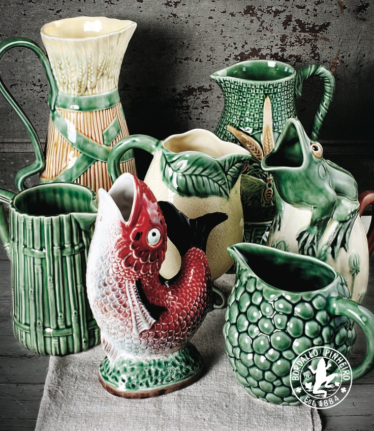
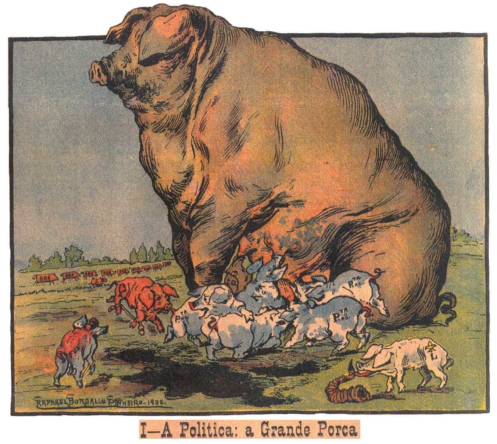

Rafael Bordalo Pinheiro nasce em 1846 na Rua da Fé, em Lisboa, sendo o primogénito de um conjunto de 12 filhos. A dedicação à Arte seria partilhada por Rafael e dois dos seus irmãos: Maria Augusta e Columbano. Esta paixão pela Arte é desde cedo demonstrada por Bordalo, tendo oferecido à sua tia um quadro da sua autoria quando tinha apenas 11 anos.
Para além da dedicação prematura à pintura, Bordalo revela um forte interesse pelo teatro, o que o leva, em 1860, a representar no Teatro Garrett e a inscrever-se na Escola Dramática fundada por Duarte de Sá.
Um ano depois, o artista matricula-se em Desenho de Arquitectura Civil na Academia de Belas-Artes de Lisboa e, posteriormente, em Desenho Histórico. Já nesta altura, Bordalo apresenta-se como um jovem de personalidade forte: indisciplinado, boémio, pouco organizado e pouco persistente, mas extremamente dinâmico e dotado de um grande brilhantismo e de uma capacidade invulgar para encontrar a vertente pitoresca dos fenómenos e objectos. Neste contexto percebe-se que em 1865, ano em que se matricula no Curso Superior de Letras e em Desenho do Antigo, comece a pensar dedicar-se a um novo género: a caricatura.
Em 1866, casa-se com Elvira Ferreira de Almeida e um ano depois nasce o seu primeiro filho, Manuel Gustavo, que se viria a dedicar ao desenho e à cerâmica. Depois do casamento, Bordalo vive um período de grande felicidade e adquire uma seriedade e responsabilidade, que não o tinham caracterizado enquanto jovem. Apesar de nunca abandonar o seu carácter boémio e a sua filosofia de vida, Bordalo mantém sempre laços familiares muito fortes.
Em 1868, participa no Salão da Sociedade Promotora de Belas Artes, juntamente com o seu pai e irmão, e nesse mesmo ano candidata-se, sem sucesso, a uma bolsa de estudos em Roma. Um ano mais tarde inscreve-se em Modelo Vivo na Academia e pouco tempo depois realiza o seu primeiro trabalho impresso. A partir desse momento, os seus trabalhos artísticos de tipo popular e humorísticos sucedem-se, e a participação de Bordalo em Exposições torna-se mais frequente, sendo de destacar a Exposição Internacional de Madrid, em 1871. É também neste ano que se matricula pela última vez na Academia.
A sua actividade no âmbito da cerâmica e da ilustração torna-o um artista reconhecido e homenageado a nível nacional e internacional, tendo sido galardoado com diversos Prémios, sendo de destacar a atribuição do Grau de Cavaleiro da Legião de Honra e a homenagem no Chat Noir, oferecida por Rodolphe Salis. Assim, em 1905, ano da sua morte, Bordalo reúne críticas extremamente favoráveis ao seu trabalho e impõe-se como uma figura incontornável do meio artístico português.
OBRA
A obra de Rafael Bordalo Pinheiro tornou-o numa referência no contexto cultural, artístico e social da segunda metade do século XIX. Apesar de apresentar uma obra muito diversificada, que abrange o desenho, o grafismo, a pintura e a cerâmica, o artista notabilizou-se como caricaturista. Foi essencialmente neste domínio que desempenhou um importante papel enquanto crítico de uma sociedade contemporânea repleta de contradições e ambiguidades. Assim, a sua obra reflecte de forma crítica o quotidiano cultural, político e social da época em que viveu. Uma das suas obras mais emblemáticas é a figura humorística Zé Povinho, que hoje em dia se encontra fortemente enraizada no imaginário português.
TEATRO
Bordalo Pinheiro estabeleceu desde cedo uma relação muito próxima com o teatro, tendo sido actor e tendo estudado no Conservatório quando ainda era muito jovem. Este interesse pelo teatro leva Bordalo a dedicar-se à crítica teatral e a cooperar com Júlio César Machado na ilustração do seu livro Os theatros de Lisboa. Por outro lado, a influência do teatro torna-se visível ao longo de toda a sua obra gráfica, a qual reúne sistematicamente um conjunto abrangente de referências a esta área artística.
LOIÇA DAS CALDAS
É em 1884 que Bordalo Pinheiro se dedica à cerâmica, devido à fundação da Fábrica de dupla função, por um lado era utilizada para a produção industrial, por outro apresentava um carácter pedagógico pois estava também vocacionada para o ensino.
A loiça foi frequentemente utilizada por Bordalo com o objectivo de tornar perenes algumas das figuras gráficas mais marcantes que criou, caso do Zé Povinho, que acabou por ser produzido em série, adoptando diferentes versões. A loiça bordaliana caracteriza-se por fazer convergir diferentes referências estéticas, mantendo um carácter invulgarmente eclético. Algumas das obras de cerâmica de Bordalo atingiram grande notoriedade, impondo-se como uma referência incontornável da história da cerâmica portuguesa.

A PORCA DA POLÍTICA
A Porca da Política é a primeira das ilustrações incluídas na Zoopolítica, publicada no jornal bordaliano A Paródia, que surge em 1900 com um conceito inovador: “é a caricatura ao serviço da grande tristeza pública”. O desenho Política – a grande porca apresenta uma enorme porca, que alimenta fria e indiferentemente os seus bácoros, identificados com o nome dos vários partidos políticos da época. Esta representação tornou-se uma das mais emblemáticas de Bordalo pela crítica incisiva que concretiza. A série Zoopolítica inclui outras criações de Bordalo como o cão, a galinha ou o papagaio, que, apesar do seu carácter crítico, não alcançaram o sucesso de A porca da política.

O ZÉ POVINHO
O Zé Povinho tornou-se um símbolo nacional, uma criação bordaliana imortal, que ainda hoje é evocada como representante da identidade nacional e da sua gente. Na figura do Zé Povinho condensam-se as características do português proveniente dos campos, que é ignorado e se encontra sujeito às vontades do Governo. Assim, esta figura encarna as necessidades, os sofrimentos e injustiças de que o Povo é alvo. Daí que esta ilustração seja acompanhada pela frase “Albarde-se o burro à vontade do dono”, fazendo uma alusão a uma figura popular que é constantemente “aldrabada” por uma elite com poder. Mais do que uma representação identitária, o Zé Povinho permite criticar uma época, uma forma de vida e a subalternização de um povo.